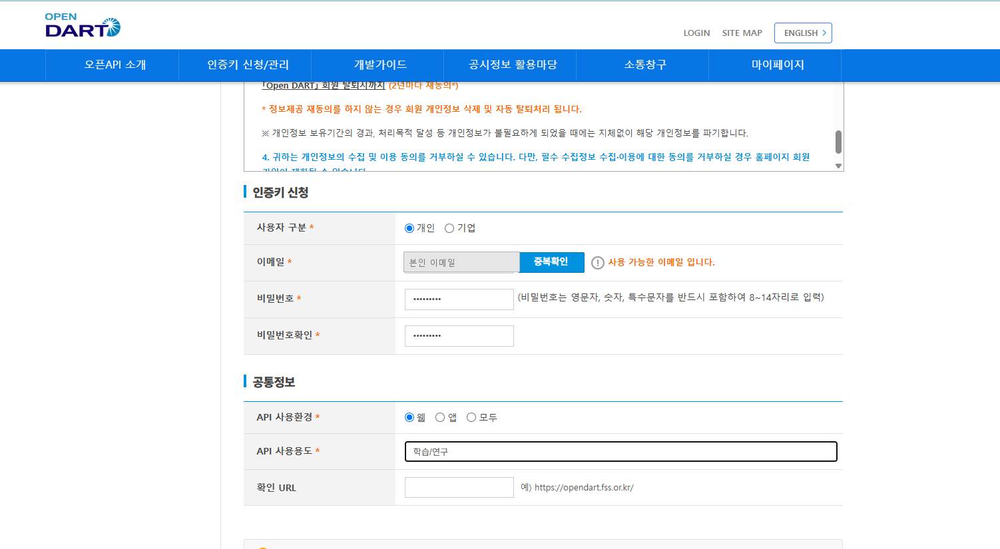
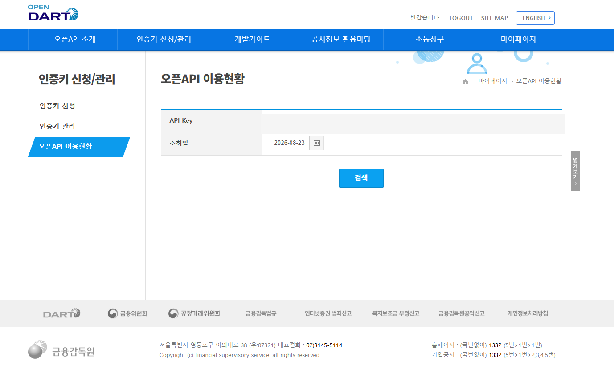
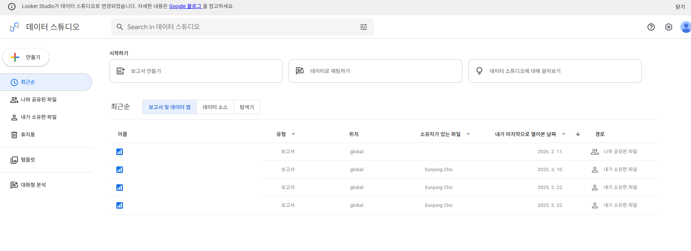
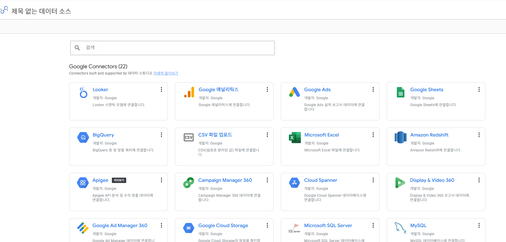
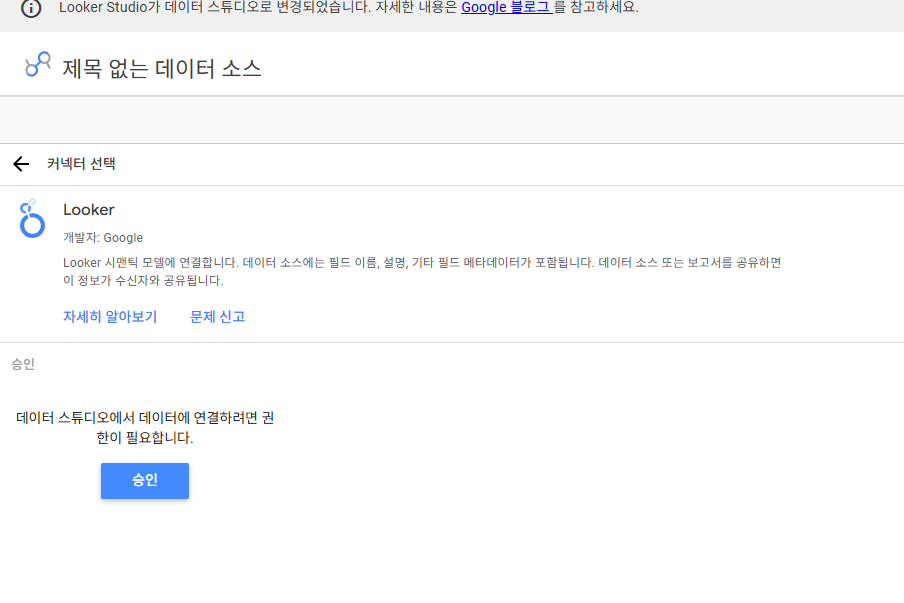
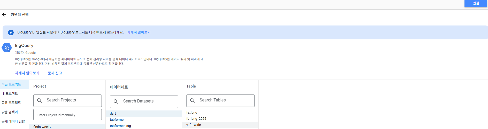

FinDA 8주차 3일차 — 데이터는 저절로 쌓이지 않는다: DART → BigQuery 재무분석 파이프라인¶
8주차 마지막 날(3시간) 강의안. Colab에서 OpenDART API로 기업 재무제표를 직접 수집·정제해 본인 BigQuery 프로젝트에 배치 적재하고, 재무제표를 읽는 법을 익힌 뒤 이틀간 배운 SQL로 3개년 재무분석까지 완주하는 날입니다. "남이 만든 데이터를 조회하는 사람"에서 "필요한 데이터를 직접 확보해 쌓고, 읽는 사람"으로 넘어갑니다. 전 과정 과금 0원입니다.
오늘의 개요¶
| 구분 | 시간 | 내용 |
|---|---|---|
| Session 3-1 | 50분 | OpenDART 이해와 사전 준비 → 수집·정제·적재 |
| 쉬는 시간 | 10분 | |
| Session 3-2 | 50분 | 재무제표 읽는 법 → SQL로 확인 (검증·피벗·재무비율·YoY) |
| 쉬는 시간 | 10분 | |
| Session 3-3 | 50분 | 배치 자동화(GitHub Actions)와 Looker Studio 대시보드, 회고 |
| 쉬는 시간 | 10분 | |
| 합계 | 180분 (3시간) |
오늘의 학습 목표¶
- (1) 배치 파이프라인의 4단계(수집→정제→적재→검증)를 설명하고 직접 구현할 수 있다.
- (2) load job과 스트리밍 insert의 비용 차이를 알고, "왜 배치인가"를 아키텍처 관점에서 설명할 수 있다.
- (3) 멱등성 2패턴(전체 재적재 replace, 하이워터마크 append)을 구분해 쓸 수 있다.
- (4) OpenDART API로 기업 재무제표를 수집하고, long format 그레인으로 정제·적재할 수 있다.
- (5) 손익계산서·재무상태표·현금흐름표를 연결해 회사의 3개년 흐름을 문장으로 설명할 수 있다.
- (6) 조건부 집계로 long→wide 피벗을 만들고, 재무비율(부채비율·영업이익률·ROE)을 SQL로 산출할 수 있다.
- (7) LAG로 연도별 성장률을, QUALIFY로 기업 간 비교 랭킹을 만들 수 있다.
- (8) 파이프라인을 GitHub Actions cron으로 주 1회 자동 실행되게 만들고, Looker Studio로 기업 비교 대시보드를 만들 수 있다.
오늘 시작 전 확인 사항 (사전 준비 안 된 분은 손!)¶
- (1) OpenDART API 키 — 사전 안내대로 발급받아 오셨어야 합니다. 못 받았으면 1-5에서 같이 신청하고(5분), 승인 전까지는 플랜 B(사전 배포 JSON 파일)로 실습합니다.
- (2) 본인 GCP 프로젝트 — 확인 쿼리 1줄이 돌아가는 상태여야 합니다. 문제가 있으면 강사 프로젝트의
student_N데이터셋을 임시로 씁니다. - (3) Colab 접속 확인. 오늘은 하루 종일 Colab과 BigQuery 콘솔을 오갑니다.
- (4) 오늘 만드는 데이터셋의 위치는 asia-northeast3(서울)로 통일합니다 — 7주차 데이터와 같은 리전이어야 나중에 조인할 수 있습니다.
오늘의 큰 그림 한 줄: 실무 데이터 분석가의 하루 절반은 "필요한 데이터를 확보하는 일"입니다. 오늘 그 절반을 배웁니다.
Session 3-1. OpenDART 이해와 수집·정제·적재 (50분)¶
1-1. 도입: 분석가는 데이터를 기다리지 않는다 (3분)¶
이번 주 내내 우리는 강사가 올려 둔 TabFormer를 썼습니다. 그런데 회사에서는 이런 일이 매일 생깁니다.
"경쟁사 재무 상태를 우리 대시보드에 넣고 싶은데요." — 사내 DW에는 그런 데이터가 없습니다. 누군가 밖에서 가져와서, 쌓아야 합니다.
오늘 그 "누군가"가 됩니다. 재료는 대한민국에서 가장 신뢰할 수 있는 공짜 데이터 — 전자공시시스템(DART)의 기업 재무제표입니다.
1-2. 파이프라인 4단계와 배치 vs 스트리밍 (6분)¶
flowchart LR
A["(1) 수집<br/>OpenDART API"] --> B["(2) 정제<br/>pandas"]
B --> C["(3) 적재<br/>load job"]
C --> D["(4) 검증<br/>SQL 체크"]데이터를 BigQuery에 넣는 길은 크게 둘입니다.
| 배치 (load job) | 스트리밍 insert | |
|---|---|---|
| 방식 | 파일·DataFrame을 한 번에 적재 | 행 단위로 실시간 밀어넣기 |
| 비용 | 무료 | 유료 (GB당 과금) |
| 지연 | 분 단위 | 초 단위 |
| 우리의 선택 | ✅ | ❌ (샌드박스에서는 아예 불가) |
"학생 과금 금지"라는 우리 원칙이 여기서 아키텍처를 결정합니다 — 재무제표는 1년에 네 번 나오는 데이터라 실시간이 필요 없고, 그러면 무료인 load job이 정답입니다. 비용 제약이 설계를 이끄는 것, 실무에서도 똑같습니다.
그리고 2일차 FDS에서 본 절차형 vs 집합의 구도가 적재에도 있습니다 — 행 단위 insert를 루프로 돌리는 것은 절차형의 죄악입니다(느리고, 유료이고, 쿼터를 갉아먹습니다). 모아서 한 번에, 배치로.
1-3. 멱등성: 같은 배치를 두 번 돌려도 안전한가 (5분)¶
배치는 실패하고, 재실행됩니다. 그때 데이터가 두 배가 되면 안 됩니다. 멱등성(같은 작업을 몇 번 해도 결과가 같음)을 확보하는 두 패턴:
- (1) 전체 재적재(replace): 테이블을 지우고 다시 만든다. 단순하고 확실. 데이터가 작을 때의 정답. → 오늘 1-8에서 사용.
- (2) 하이워터마크 append: "어디까지 쌓았나"(예: 마지막 연도)를 조회하고, 그 이후만 수집해 덧붙인다. 데이터가 클 때의 정답. → 데이터가 커질 때의 확장으로 3-1에서 소개.
실무에는 세 번째 패턴(MERGE upsert)이 있지만 샌드박스에서는 DML 제약이 있어 다루지 않습니다 — "실무에선 MERGE가 추가된다" 한 줄만 기억하세요. 그리고 하이워터마크 append는 부분 실패 후 재실행 시 중복이 생길 수 있는 준-멱등 패턴입니다. 그래서 4단계(검증)가 파이프라인의 장식이 아니라 필수입니다.
1-4. OpenDART 해부 (7분)¶
OpenDART(opendart.fss.or.kr)는 금융감독원 전자공시의 공식 API입니다. DART 자체는 상장사가 법으로 정해진 공시 의무를 이행하는 창구이고, 그 의무 덕분에 우리가 재무제표를 공짜로, 표준화된 형태로 받아올 수 있습니다. 규제가 곧 데이터 소스입니다.
- (1) 인증: API 키 1개. 무료, 일 20,000건 한도 — 수업 용도로는 무한에 가깝습니다.
- (2) 기업 식별: 종목코드가 아니라 DART 고유의
corp_code(8자리)를 씁니다. 전체 목록은corpCode.xml(zip)로 한 번에 내려받습니다. 여기에는 상장사뿐 아니라 공시 의무가 있는 모든 법인 10만 개 이상이 들어 있고, 상장사는 그중stock_code가 붙은 2,600곳 남짓입니다. - (3) 재무제표 API 2종:
| API | 용도 | 우리의 선택 |
|---|---|---|
fnlttSinglAcntAll |
단일회사 전체 재무제표 — 한 회사의 모든 계정과목 | ✅ 주 교재 (long format 교육 가치) |
fnlttMultiAcnt |
다중회사 주요계정 — 여러 회사의 핵심 계정만 | 기업 비교 시 보조 |
- (4) 파라미터 상식:
bsns_year(사업연도),reprt_code(11011 사업보고서, 11012 반기, 11013 1분기, 11014 3분기),fs_div(CFS 연결 / OFS 별도). - (5) 응답의 모양: 재무제표가 "표"가 아니라 "행들"로 옵니다 — 한 행 = 계정과목 하나.
account_nm(계정명),thstrm_amount(당기 금액),sj_div(BS 재무상태표 / IS 손익계산서 / CF 현금흐름표)….
이 long format이 오늘의 스키마 설계 그 자체입니다.
1-5. 사전 준비: API 키 발급과 GCP 점검 (4분)¶
원래 수업 전에 마쳐 오는 부분입니다. 이미 하신 분은 확인만 하고 넘어가고, 못 하신 분은 지금 신청하세요 — 승인까지 시간이 걸릴 수 있어 플랜 B와 병행합니다.
준비 1. OpenDART API 키 발급 (5분, 무료)
- (1) https://opendart.fss.or.kr 접속 → 우측 상단 "인증키 신청/관리"
- (2) 회원가입 (이메일 인증)
- (3) 로그인 후 인증키 신청 — 사용 목적은 "학습/연구"로 간단히 적으면 됩니다
- (4) 발급된 키(영문+숫자 40자)를 메일 또는 마이페이지에서 확인
인증키 신청 화면은 이렇게 생겼습니다 — 이메일은 본인 것을 넣고, 사용자 구분 개인 / API 사용환경 웹 / API 사용용도 학습/연구로 채우면 됩니다 (확인 URL은 비워도 됩니다).

발급 확인 테스트: 브라우저 주소창에 아래를 붙여넣고(키 부분만 교체) 실행하세요.
"status":"000"과 함께 삼성전자 정보가 보이면 성공입니다. "010" 또는 "011"이면 키가 아직 활성화되지 않은 것 — 몇 분 뒤 다시 시도하세요.
발급된 키와 일별 호출량은 마이페이지 → 오픈API 이용현황에서 언제든 확인할 수 있습니다.

키는 비밀번호처럼 다룹니다. 노트북(Colab)을 공유할 때 키가 박힌 채로 공유하지 않기 — 1-7에서 안전한 보관 패턴을 씁니다.
준비 2. GCP 프로젝트 점검 (3분)
오늘은 7주차처럼 강사 데이터를 "읽기만" 하는 게 아니라 본인 프로젝트에 테이블을 만듭니다. 프로젝트가 살아 있는지 확인하세요.
- (1) https://console.cloud.google.com/bigquery 접속
- (2) 상단 프로젝트 선택기에서 본인 프로젝트(7주차 첫날 만든 것)를 선택
- (3) 쿼리 편집기에서
SELECT 1 AS ok실행 →ok = 1이 나오면 통과
프로젝트가 없거나 오류가 나면 손을 드세요 — 강사 프로젝트의 student_N 데이터셋을 임시로 배정합니다.
📷 스크린샷 추가 예정: (프로젝트 선택기와 확인 쿼리 결과 화면)
1-6. 스키마 설계: 그레인 선언 (4분)¶
7주차 마트 원칙 — 설계의 첫 질문은 "한 행이 무엇인가". 오늘의 답:
한 행 = 기업 × 사업연도 × 재무제표구분(fs_div) × 재무제표종류(sj_div) × 계정과목
이 그레인이면 (1) 어떤 계정이 와도 스키마 변경 없이 쌓이고 (2) 여러 기업·여러 연도를 같은 테이블에 append할 수 있고 (3) 분석 시점에 원하는 모양으로 피벗하면 됩니다. "넓은 표로 저장하고 싶은 유혹을 참고, 길게 쌓아서 나중에 피벗한다" — 웨어하우스 설계의 기본기입니다.
1-7. 실습: 키 등록과 내 기업 찾기 (8분)¶
Colab에서 순서대로:
# (1) 키 등록과 corpCode 내려받기
import getpass
import io
import os
import zipfile
import xml.etree.ElementTree as ET
import pandas as pd
import requests
# 키를 노트북에 적어 두지 않는다 — 실행하면 입력창이 뜬다
API_KEY = os.environ.get("DART_API_KEY") or getpass.getpass("DART API 키를 붙여넣으세요: ")
res = requests.get(
"https://opendart.fss.or.kr/api/corpCode.xml",
params={"crtfc_key": API_KEY},
timeout=30,
)
zf = zipfile.ZipFile(io.BytesIO(res.content))
tree = ET.parse(zf.open("CORPCODE.xml"))
rows = [
{
"corp_code": el.findtext("corp_code"),
"corp_name": el.findtext("corp_name"),
"stock_code": (el.findtext("stock_code") or "").strip(),
}
for el in tree.iter("list")
]
corp = pd.DataFrame(rows)
print(len(corp)) # 10만 개 이상 (비상장 포함)
# (2) 상장사만 남기고, 분석할 기업 찾기
listed = corp[corp["stock_code"] != ""]
print(f"상장사 {len(listed)}개 / 전체 {len(corp)}개")
# 이름은 비슷한 게 많아서(삼성전자서비스 등) 종목코드로 찾는 편이 안전하다
TARGET_STOCKS = ["005930", "000660"] # 삼성전자, SK하이닉스
targets = listed[listed["stock_code"].isin(TARGET_STOCKS)].reset_index(drop=True)
targets
print(len(corp))의 10만 개는 상장사 수가 아닙니다 — DART에 공시 의무가 있는 전체 법인 수이고, 상장사는stock_code가 붙은 2,600곳 남짓입니다.- 미션: 본인이 분석하고 싶은 상장사 1곳의 종목코드를
TARGET_STOCKS에 추가하세요. - 키가 아직 없는 분: 강사가 배포한
corpcode_sample.csv와fs_sample.json으로 같은 흐름을 재현합니다.
1-8. 실습: 수집 → 정제 → 적재 (13분)¶
(1) 수집 — 대상 기업 × 최근 5년 사업보고서를 한 번에 받습니다.
LATEST_YEAR = 2025 # 사업보고서가 나온 가장 최근 사업연도
YEARS = range(LATEST_YEAR - 4, LATEST_YEAR + 1) # 최근 5년
def fetch_fs(corp_code, year, reprt_code="11011", fs_div="CFS"):
"""한 기업의 한 해 재무제표. 아직 공시 전이면 None을 돌려준다."""
res = requests.get(
"https://opendart.fss.or.kr/api/fnlttSinglAcntAll.json",
params={
"crtfc_key": API_KEY,
"corp_code": corp_code,
"bsns_year": str(year),
"reprt_code": reprt_code, # 11011 사업보고서
"fs_div": fs_div, # CFS 연결
},
timeout=30,
)
data = res.json()
if data["status"] == "013": # 조회된 데이터 없음 = 아직 공시 전
return None
if data["status"] != "000":
raise RuntimeError(f"{corp_code} {year}: {data['status']} {data['message']}")
return pd.DataFrame(data["list"])
raw_parts = []
for row in targets.itertuples():
for year in YEARS:
raw = fetch_fs(row.corp_code, year)
if raw is None:
print(f"건너뜀 {row.corp_name} {year} (아직 공시 전)")
continue
raw["corp_name"] = row.corp_name # 응답에 없는 값은 우리가 채운다
raw["fs_div"] = "CFS"
raw_parts.append(raw)
print(f"수집 {row.corp_name} {year}: {len(raw)}행")
raw_all = pd.concat(raw_parts, ignore_index=True)
status 코드 상식: 000 성공, 010/011 키 문제, 013 데이터 없음, 020 한도 초과. 013을 예외가 아니라 정상 흐름으로 처리한 것에 주목하세요 — "아직 안 나온 분기"는 오류가 아니라 배치가 매번 만나는 평범한 상황입니다.
화면에 뜬 것을 관찰하세요 — thstrm_amount가 "258,935,494,000,000" 같은 콤마 붙은 문자열입니다. 7주차 첫날 $318.35를 만났을 때와 같은 상황입니다. 어느 원천이든 금액은 문자열로 온다 — 이제는 놀랍지 않죠.
(2) 정제 — 콤마 금액과 컬럼 다이어트.
def clean_amount(s: pd.Series) -> pd.Series:
"""콤마 제거 후 숫자로. 실패하면 NaN (SAFE_CAST의 pandas 버전)."""
return pd.to_numeric(s.astype(str).str.replace(",", "", regex=False), errors="coerce")
fs = raw_all[[
"corp_code", "corp_name", "bsns_year", "reprt_code", "fs_div",
"sj_div", "sj_nm", "account_id", "account_nm", "ord",
"thstrm_amount",
]].copy()
fs["amount_krw"] = clean_amount(fs["thstrm_amount"]).astype("Int64") # 원 단위 정수
fs["bsns_year"] = fs["bsns_year"].astype(int)
fs["ord"] = pd.to_numeric(fs["ord"], errors="coerce").astype("Int64")
fs = fs.drop(columns=["thstrm_amount"])
fs.info()
- (1)
errors="coerce"는 pandas의 SAFE_CAST입니다 — 못 바꾸는 값은 NaN으로. 어디서 NaN이 생겼는지fs[fs["amount_krw"].isna()]로 꼭 봐야 합니다 (일부 주석성 계정은 금액이 비어 있는 것이 정상). - (2)
Int64(대문자 I)는 NULL을 담을 수 있는 정수형입니다. 금액을 실수로 저장하면 BigQuery에서 FLOAT64가 되므로, 원 단위 정수는 정수로 싣습니다. - (3)
account_id(표준계정 ID)를 버리지 않고 남긴 이유:account_nm(한글 계정명)은 기업·연도마다 표기가 흔들릴 수 있어, 정밀 분석에는 ID가 더 안정적입니다. 오늘은 이름으로 가되 ID를 보험으로 싣습니다.
(3) 적재 — pandas-gbq load job.
from pandas_gbq import to_gbq
MY_PROJECT = "본인-프로젝트-ID"
to_gbq(
fs,
destination_table="dart.fs_long",
project_id=MY_PROJECT,
if_exists="replace", # 멱등 패턴 (1): 전체 재적재
location="asia-northeast3", # 7주차 데이터와 같은 리전
)
print(f"적재 완료: {len(fs)}행")
콘솔에서 확인 — dart.fs_long 테이블의 Schema 탭과 미리보기. 적재 후 콘솔 확인은 습관입니다. (to_gbq는 내부적으로 load job을 씁니다 — 무료 경로인 이유.)
마지막으로 노트북을 위에서 아래로 한 번 더 실행하세요. 행 수가 그대로면(2배가 아니면) replace 멱등성이 확인된 것입니다. "재실행해도 안전한가"는 배치의 첫 번째 인터뷰 질문입니다.
다음 세션 예고: 쌓았습니다. 그런데 무엇을 봐야 하는지 모르면 쌓은 의미가 없습니다.
Session 3-2. 재무제표 읽는 법과 SQL 확인 (50분)¶
2-1. 재무제표 읽는 법: 네 개의 표와 읽는 순서 (15분)¶
오늘의 목표는 회계사가 되는 게 아니라 "이 회사가 최근 3년간 어떻게 돈을 벌었고, 재무적으로 좋아지고 있는가"를 데이터로 말하는 것입니다. 그 정도는 표 세 개와 사업 내용 하나면 충분합니다.
| 재무제표 | 한마디로 | 알고 싶은 것 | sj_div |
|---|---|---|---|
| 손익계산서 | 올해 장사 잘했나 | 매출, 영업이익, 순이익 | IS |
| 재무상태표 | 지금 가진 것과 빚은 | 자산, 부채, 자본 | BS |
| 현금흐름표 | 실제 현금은 움직였나 | 영업·투자·재무 현금흐름 | CF |
| 사업부문 정보 | 그래서 뭘 팔아서 벌었나 | 부문별 매출·영업이익 | API에 없음 |
읽는 순서는 이렇습니다. 위에서 아래로 한 번만 훑으면 회사의 3년이 대략 보입니다.
- (1) 뭘 하는 회사인가 → 사업의 내용 / 사업부문
- (2) 얼마나 팔았나 → 매출액
- (3) 그래서 얼마나 벌었나 → 영업이익 → 영업이익률 → 당기순이익
- (4) 무엇으로 벌었나 → 사업부문별 매출·영업이익
- (5) 재무적으로 튼튼한가 → 자산·부채·자본 → 부채비율
- (6) 실제 현금도 들어오나 → 영업활동현금흐름
- (7) 3년간 좋아지고 있나 → YoY와 추세
손익계산서 — 3개년 분석의 출발점¶
| 2023 | 2024 | 2025 | |
|---|---|---|---|
| 매출액 | 100조 | 120조 | 150조 |
| 영업이익 | 10조 | 15조 | 24조 |
| 당기순이익 | 8조 | 12조 | 19조 |
이 표만 봐도 "매출도 늘고 있고, 이익은 매출보다 더 빠르게 늘고 있다"는 첫 판단이 섭니다. 세 숫자는 이렇게 이어집니다 — 매출액(얼마나 팔았나) → 영업이익(본업으로 얼마나 남겼나) → 당기순이익(이자·세금까지 치르고 최종으로 얼마 남았나).
여기에 영업이익률 = 영업이익 ÷ 매출액을 항상 세트로 보세요. 24조 ÷ 150조 = 16%, 즉 "100원어치 팔아서 본업으로 16원 남겼다"입니다. 매출액·영업이익·영업이익률 셋을 묶는 것이 3개년 분석의 기본기입니다.
재무상태표 — 한 시점의 재산 상태¶
손익계산서가 1년 동안의 성적이라면, 재무상태표는 특정 시점의 스냅숏입니다. 구조는 하나만 기억하면 됩니다.
자산 = 부채 + 자본
처음에는 전부 볼 필요 없습니다. 현금및현금성자산(현금을 얼마나 쥐고 있나), 부채총계(빚이 늘고 있나), 자본총계(자기자본이 쌓이고 있나) 셋이면 됩니다. 여기서 나오는 유명한 지표가 부채비율 = 부채총계 ÷ 자본총계 × 100입니다. 다만 "몇 % 넘으면 위험"처럼 절대 기준으로 읽으면 안 됩니다 — 동종 업계와 비교할 때만 의미가 생깁니다.
현금흐름표 — 가장 많이 건너뛰지만 가장 정직한 표¶
이익이 났다고 현금이 들어온 것은 아닙니다. 세 줄만 보면 됩니다.
| 현금흐름 | 의미 |
|---|---|
| 영업활동현금흐름 | 본업으로 현금을 벌었나 |
| 투자활동현금흐름 | 공장·설비·투자에 돈을 썼나 |
| 재무활동현금흐름 | 빌리고, 갚고, 배당했나 |
특히 영업활동현금흐름을 영업이익과 나란히 놓아 보세요.
| 2023 | 2024 | 2025 | |
|---|---|---|---|
| 영업이익 | 10조 | 15조 | 20조 |
| 영업활동현금흐름 | 11조 | 5조 | -2조 |
이런 모양이 나오면 질문이 생깁니다 — "이익은 계속 느는데 왜 실제 현금은 안 들어오지?" 매출채권이나 재고자산이 급증했는지 확인할 이유가 생기는 겁니다. 좋은 분석은 답을 내는 게 아니라 다음 질문을 만듭니다.
3개년 분석에 필요한 지표는 10개면 충분¶
| 영역 | 지표 | 보는 이유 |
|---|---|---|
| 성장 | 매출액 | 회사 규모가 커지는가 |
| 수익성 | 영업이익 | 본업으로 버는가 |
| 수익성 | 영업이익률 | 얼마나 효율적으로 버는가 |
| 수익성 | 당기순이익 | 최종적으로 얼마 남았나 |
| 안정성 | 자산총계 | 전체 규모 |
| 안정성 | 부채총계 | 부담이 늘고 있나 |
| 안정성 | 자본총계 | 자기자본이 쌓이나 |
| 안정성 | 부채비율 | 부채 부담 수준 |
| 현금 | 영업활동현금흐름 | 실제로 현금이 들어오나 |
| 사업구조 | 사업부문별 매출·영업이익 | 도대체 무엇으로 버나 |
앞의 아홉 개는 1교시에 쌓은 fs_long에서 SQL로 전부 나옵니다. 열 번째만 나오지 않습니다.
사업부문 정보가 API에 없는 이유:
fnlttSinglAcntAll은 재무제표 본표만 돌려줍니다. 부문별 매출·영업이익은 사업보고서 본문의 "사업의 내용"과 주석에 있어서, DART 웹(dart.fss.or.kr)에서 사람이 읽어야 합니다. 오늘 숫자 분석은 나머지 아홉 개로 하고, 부문별 표는 과제에서 DART 웹으로 직접 확인합니다 — 무엇이 자동화되고 무엇이 안 되는지 구분하는 것도 파이프라인 설계의 일부입니다.
부문별 정보가 왜 중요한지는 예를 보면 바로 옵니다.
| 사업 | 매출 | 영업이익 |
|---|---|---|
| 반도체 | 100조 | 20조 |
| 모바일 | 120조 | 12조 |
| 디스플레이 | 30조 | 5조 |
| 기타 | 20조 | 1조 |
"270조 매출 회사"라는 한 줄보다 "매출은 모바일이 크지만 이익은 반도체가 끌고 있다"가 훨씬 중요한 사실입니다. 이게 "이 회사가 무엇으로 돈을 버는가"에 대한 답입니다.
숫자보다 변화¶
마지막이자 가장 중요한 원칙입니다. "2025년 매출 300조"라는 사실 하나보다,
2023년 260조 → 2024년 280조 (+7.7%) → 2025년 300조 (+7.1%)
이 흐름이 훨씬 많은 것을 말합니다. 그래서 오늘 SQL의 종착점이 LAG로 뽑는 YoY입니다. 1일차에 배운 윈도우 함수가 2-5에서 여기에 쓰입니다.
2-2. 검증: 쿼리 4종 세트 (8분)¶
읽는 법을 알았으니 이제 쿼리로 확인합니다. 그런데 그 전에, 쌓은 것이 믿을 만한지부터 봅니다. 파이프라인의 4단계이자 오늘 이후 여러분의 모든 적재에 따라붙어야 하는 4종입니다.
-- (1) 행 수: 기대 범위인가 (전체 재무제표는 보통 수백 행 × 기업 × 연도)
SELECT COUNT(*) AS row_cnt
FROM `본인프로젝트.dart.fs_long`;
-- (2) 그레인 중복: 한 행이 정말 한 행인가
SELECT
f.corp_code, f.bsns_year, f.fs_div, f.sj_div, f.account_id, f.account_nm,
COUNT(*) AS dup_cnt
FROM `본인프로젝트.dart.fs_long` AS f
GROUP BY f.corp_code, f.bsns_year, f.fs_div, f.sj_div, f.account_id, f.account_nm
HAVING COUNT(*) > 1;
-- (3) 핵심 계정 존재: 분석에 쓸 계정이 실제로 있는가
SELECT DISTINCT f.sj_div, f.account_nm
FROM `본인프로젝트.dart.fs_long` AS f
WHERE f.account_nm LIKE '%매출%'
OR f.account_nm LIKE '%영업이익%'
OR f.account_nm LIKE '%총계%'
OR f.account_nm LIKE '%현금흐름%'
ORDER BY f.sj_div, f.account_nm;
-- (4) NULL 비율: 정제에서 새는 곳은 없는가
SELECT
COUNTIF(f.amount_krw IS NULL) AS null_cnt,
SAFE_DIVIDE(COUNTIF(f.amount_krw IS NULL), COUNT(*)) AS null_rate
FROM `본인프로젝트.dart.fs_long` AS f;
(3)번을 특히 잘 보세요. 다음 절의 피벗에서 쓸 계정명이 실제로 어떻게 적혀 있는지 확인하는 쿼리입니다. 매출액인지 수익(매출액)인지, 영업활동현금흐름인지 영업활동으로인한현금흐름인지가 여기서 드러납니다. 원천의 표기를 확인하지 않고 쓴 CASE 문은 조용히 NULL을 만듭니다.
2-3. 피벗: long을 wide로 (8분)¶
분석 질문은 wide를 원합니다("매출, 영업이익, 부채, 현금흐름을 한 행에"). 조건부 집계가 피벗의 표준 문형입니다 — 피벗은 함수가 아니라 패턴입니다.
WITH wide AS ( -- 한 행 = 기업 × 사업연도
SELECT
f.corp_name,
f.bsns_year,
-- 재무상태표 (BS)
MAX(CASE WHEN f.account_nm = '자산총계' THEN f.amount_krw END) AS assets,
MAX(CASE WHEN f.account_nm = '부채총계' THEN f.amount_krw END) AS liabilities,
MAX(CASE WHEN f.account_nm = '자본총계' THEN f.amount_krw END) AS equity,
MAX(CASE WHEN f.account_nm = '현금및현금성자산' THEN f.amount_krw END) AS cash,
MAX(CASE WHEN f.account_nm = '재고자산' THEN f.amount_krw END) AS inventory,
MAX(CASE WHEN f.account_nm = '매출채권' THEN f.amount_krw END) AS receivables,
-- 손익계산서 (IS)
MAX(CASE WHEN f.account_nm = '매출액' THEN f.amount_krw END) AS revenue,
MAX(CASE WHEN f.account_nm = '영업이익' THEN f.amount_krw END) AS op_income,
MAX(CASE WHEN f.account_nm = '당기순이익' THEN f.amount_krw END) AS net_income,
-- 현금흐름표 (CF)
MAX(CASE WHEN f.account_nm LIKE '영업활동%현금흐름'
THEN f.amount_krw END) AS operating_cf
FROM `본인프로젝트.dart.fs_long` AS f
WHERE f.fs_div = 'CFS'
AND f.sj_div IN ('BS', 'IS', 'CF')
GROUP BY f.corp_name, f.bsns_year
)
SELECT * FROM wide
ORDER BY corp_name, bsns_year
계정명이 기업에 따라 매출액이 아니라 수익(매출액)으로 오기도 하고, 영업활동현금흐름은 표기가 갈려서 LIKE로 받았습니다. 피벗 결과에 NULL이 보이면 2-2의 검증 쿼리 (3)으로 실제 계정명을 확인하고 CASE를 보정하세요 — 원천 데이터의 표기 흔들림에 대응하는 것까지가 수집가의 일입니다.
2-4. 재무비율과 3개년 스토리 (9분)¶
| 비율 | 정의 | 묻는 것 |
|---|---|---|
| 부채비율 | 부채총계 / 자본총계 | 빚에 얼마나 기대고 있나 |
| 영업이익률 | 영업이익 / 매출액 | 본업으로 얼마나 남기나 |
| ROE | 당기순이익 / 자본총계 | 주주 돈으로 얼마나 벌었나 |
SELECT
w.corp_name, w.bsns_year,
SAFE_DIVIDE(w.liabilities, w.equity) AS debt_ratio,
SAFE_DIVIDE(w.op_income, w.revenue) AS op_margin,
SAFE_DIVIDE(w.net_income, w.equity) AS roe,
SAFE_DIVIDE(w.operating_cf, w.op_income) AS cf_to_profit -- 이익이 현금으로 돌아오나
FROM wide AS w
ORDER BY w.corp_name, w.bsns_year
전부 SAFE_DIVIDE입니다 — 자본잠식 기업(equity ≤ 0)이 실제로 존재하는 세계라서, 0 나누기 방어는 재무 데이터에서 장식이 아닙니다. 마지막 cf_to_profit이 2-1에서 본 "이익 대비 현금" 질문을 한 컬럼으로 만든 것입니다. 1 근처면 건강하고, 계속 낮아지면 매출채권·재고를 확인할 신호입니다.
결과를 이런 표로 정리하면 스토리가 만들어집니다.
| 지표 | 2023 | 2024 | 2025 | 3년 흐름 |
|---|---|---|---|---|
| 매출 | 260조 | 280조 | 300조 | ↗ |
| 영업이익 | 15조 | 25조 | 35조 | ↗↗ |
| 영업이익률 | 5.8% | 8.9% | 11.7% | 개선 |
| 순이익 | 12조 | 20조 | 28조 | ↗ |
| 부채 | 100조 | 105조 | 110조 | 소폭 증가 |
| 부채비율 | 35% | 34% | 33% | 개선 |
| 영업현금흐름 | 30조 | 38조 | 45조 | ↗ |
그러면 이런 문장이 자연스럽게 나옵니다.
"최근 3년간 매출이 꾸준히 성장했고, 영업이익은 매출보다 빠르게 증가해 영업이익률이 5.8%에서 11.7%까지 개선됐다. 부채는 소폭 늘었지만 자본이 더 늘어 부채비율은 오히려 하락했으며, 영업현금흐름도 함께 증가해 수익성과 현금창출력이 같이 좋아지고 있다."
이 문단을 쓰는 것이 재무제표 분석의 최종 결과물입니다. 숫자를 뽑는 것이 아니라, 숫자로 문장을 만드는 것. 여러분이 만든 fs_long 하나면 여기까지 옵니다.
제조업이라면 한 단계 더: 삼성전자 같은 제조업은 재고자산·매출채권·설비투자(CAPEX)를 추가로 봅니다.
매출 ↓ + 재고 ↑면 "안 팔려서 재고가 쌓이나?",CAPEX ↑면 "공장에 대규모 투자를 하나?"라는 질문이 생깁니다. 재고자산과 매출채권은 2-3 피벗에 이미 넣어 뒀고, CAPEX는 현금흐름표의유형자산의 취득항목으로 근사할 수 있습니다. 숫자를 보는 목적은 외우는 게 아니라 다음 질문을 만드는 것입니다.
2-5. YoY와 기업 비교: 변화를 보는 쿼리 (10분)¶
2-1에서 "숫자보다 변화"라고 했습니다. 그 원칙을 쿼리로 만듭니다 — 1일차의 LAG가 재무 데이터 위에서 돌아옵니다.
SELECT
w.corp_name, w.bsns_year, w.revenue,
SAFE_DIVIDE(w.revenue,
LAG(w.revenue) OVER (PARTITION BY w.corp_name
ORDER BY w.bsns_year)) - 1 AS revenue_yoy,
SAFE_DIVIDE(w.op_income,
LAG(w.op_income) OVER (PARTITION BY w.corp_name
ORDER BY w.bsns_year)) - 1 AS op_income_yoy
FROM wide AS w
ORDER BY w.corp_name, w.bsns_year
그리고 기업 간 비교 — 1일차의 QUALIFY까지 재등장하면서 사흘의 도구가 한 쿼리에 모입니다.
-- "가장 최근 연도에 영업이익률이 가장 높은 기업은?"
SELECT
w.corp_name, w.bsns_year,
SAFE_DIVIDE(w.op_income, w.revenue) AS op_margin
FROM wide AS w
QUALIFY RANK() OVER (PARTITION BY w.bsns_year
ORDER BY SAFE_DIVIDE(w.op_income, w.revenue) DESC) <= 3
ORDER BY w.bsns_year DESC, op_margin DESC
미션: 두 기업의 3개년 흐름을 2-4의 스토리 문단 형식으로 각각 한 문단씩 써 보세요. "어느 쪽이 더 좋은 회사인가"가 아니라 "어느 쪽이 좋아지고 있는가"를 쓰는 것이 핵심입니다.
2교시 정리 — (1) 표 세 개가 답하는 질문이 다르다. (2) 피벗은 함수가 아니라 조건부 집계 패턴이다. (3) 계정명 표기는 흔들리니 CASE 전에 실제 값을 확인한다. (4) 분석의 결과물은 숫자가 아니라 문장이다.
다음 세션 예고: 지금까지는 여러분이 손으로 돌린 파이프라인입니다. 이제 그것을 매주 알아서 돌게 만들고, 결과를 남에게 보여줄 화면으로 만듭니다.
Session 3-3. 배치 자동화와 Looker Studio 대시보드 (50분)¶
3-1. 주 1회 자동 실행: GitHub Actions cron (19분)¶
지금 파이프라인의 문제는 여러분이 직접 실행 버튼을 눌러야 한다는 것입니다. 재무제표는 분기마다 새로 올라오는데, 그때마다 노트북을 열어 돌릴 수는 없습니다. 배치의 마지막 조각은 스케줄러입니다.
Colab은 왜 안 되나¶
Colab은 브라우저 세션에 묶인 대화형 환경입니다. 탭을 닫으면 런타임이 죽고, 유휴 90분·최대 12시간 제한이 있으며, 예약 실행 기능 자체가 없습니다. Colab은 "사람이 보면서 돌리는 곳"이고 배치는 "사람 없이 도는 곳"이라 용도가 다릅니다.
무료로 쓸 수 있는 선택지를 비교하면 이렇습니다.
| 도구 | 비용 | 결제 계정 | 걸림돌 |
|---|---|---|---|
| GitHub Actions cron | 퍼블릭 레포 무제한 무료 | 불필요 | 60일간 커밋 없으면 스케줄 자동 중지 |
| Cloud Run Jobs + Cloud Scheduler | 무료 티어 내 0원 | 필수(카드 등록) | 실무에 가장 가깝지만 설정 부담 |
| 로컬 PC + 작업 스케줄러 | 무료 | 불필요 | PC가 켜져 있어야 함 |
| BigQuery 예약 쿼리 | 무료 | 불필요 | 외부 API 호출 불가 (적재 후 집계 전용) |
오늘은 GitHub Actions를 씁니다. 결제 계정 없이 완전 무료이고, 파일 하나 추가하는 게 설정의 전부이기 때문입니다.
"새 분기가 왔다"를 어떻게 아는가¶
알림을 받는 게 아니라 물어봅니다. 아직 제출되지 않은 보고서를 요청하면 DART가 status 013을 돌려주니, 그때는 건너뛰고 다음을 확인하면 됩니다. 1-8에서 이미 이 구조로 짜 뒀습니다 — 그 코드가 그대로 배치가 됩니다.
for reprt_code in ["11013", "11012", "11014", "11011"]: # 1분기, 반기, 3분기, 사업보고서
raw = fetch_fs(corp_code, year, reprt_code)
if raw is None: # status 013 = 아직 공시 전
continue
...
보고서 제출 기한이 분기말 후 45일(분기·반기), 사업연도말 후 90일(사업보고서)이라 매일 돌릴 이유가 없습니다. 주 1회로 충분합니다.
워크플로 파일 한 장¶
레포지토리에 .github/workflows/dart-batch.yml을 추가하면 끝입니다.
name: DART to BigQuery batch
on:
schedule:
# 매주 월요일 한국시간 08:00 (cron은 UTC 기준이라 일요일 23:00)
- cron: "0 23 * * 0"
workflow_dispatch: # Actions 탭에서 수동 실행용
jobs:
load:
runs-on: ubuntu-latest
steps:
- uses: actions/checkout@v4
- uses: actions/setup-python@v5
with:
python-version: "3.12"
- run: pip install -r pipeline/requirements.txt
- run: python pipeline/load_dart.py
env:
DART_API_KEY: ${{ secrets.DART_API_KEY }}
GCP_SA_KEY: ${{ secrets.GCP_SA_KEY }}
GCP_PROJECT: 본인-프로젝트-ID
읽는 법은 네 줄입니다.
- (1)
schedule.cron— 언제 돌릴지. UTC 기준이라 한국시간에서 9시간을 빼야 합니다. - (2)
workflow_dispatch— 이게 있어야 Actions 탭에서 수동 실행 버튼이 생깁니다. 첫 실행은 스케줄을 기다리지 말고 여기서 눌러 확인하세요. - (3)
steps— 우분투 한 대를 빌려서 파이썬 깔고 스크립트 한 번 돌리는 게 전부입니다. - (4)
secrets.*— 키를 코드에 절대 넣지 않는 방법. 1-7에서getpass를 쓴 것과 같은 원칙이 자동화 환경으로 옮겨온 것입니다.
자격증명 설정 (시연 → 과제)¶
배치는 사람 계정이 아니라 서비스 계정으로 BigQuery에 붙습니다. 사람이 없는 시간에 도는 프로그램이니 당연합니다.
- (1) GCP 콘솔 → IAM 및 관리자 → 서비스 계정 → 만들기
- (2) 역할 두 개: BigQuery 데이터 편집자(테이블 쓰기) + BigQuery 작업 사용자(로드 잡 실행)
- (3) 키 탭 → 새 키 만들기 → JSON 다운로드
- (4) GitHub 레포 → Settings → Secrets and variables → Actions →
DART_API_KEY와GCP_SA_KEY(JSON 전체) 등록
수업에서는 강사 화면으로 (1)~(4)를 시연합니다. 본인 레포 설정은 과제로 하세요 — 여기서 각자 계정 문제를 풀기 시작하면 3교시가 통째로 날아갑니다.
자동화의 함정 세 가지¶
- (1) 빈 결과로 replace 하지 않기. DART 장애로 수집이 0건인데 그대로
replace하면 멀쩡한 테이블이 빈 테이블로 덮입니다. "수집 0건이면 적재를 중단한다"는 가드가 필요합니다. - (2) 샌드박스 60일 만료. BigQuery 샌드박스는 테이블이 60일 후 자동 삭제됩니다. 분기마다 쌓아 올리는 파이프라인에는 치명적이라, 계속 굴리려면 결제 계정 연결을 검토해야 합니다(무료 티어 안이라 실제 청구액은 0원).
- (3) 60일 무커밋 시 스케줄 중지. GitHub Actions는 레포에 60일간 커밋이 없으면 예약 실행을 자동으로 멈춥니다(메일로 미리 알려줍니다).
데이터가 더 커지면 매번 전부 다시 받는 대신 하이워터마크 append(멱등 패턴 2)로 바꿉니다 — "어디까지 쌓았나"를 조회하고 그 이후만 붙이는 방식입니다. 다만 부분 실패 시 중복이 생길 수 있는 준-멱등 패턴이라, append 파이프라인일수록 2-2의 검증 쿼리가 필수입니다.
3-2. 실습: Looker Studio 대시보드 (18분)¶
쌓았고, 읽었습니다. 마지막은 남에게 보여주는 일입니다. 분석 결과가 여러분 노트북 안에만 있으면 조직에서는 없는 것과 같습니다.
Looker Studio(현재 서비스명은 데이터 스튜디오로 변경)는 무료이고 BigQuery에 바로 붙습니다.
(1) 대시보드용 뷰 만들기 (3분)¶
fs_long은 long format이라 차트로 바로 그리기 불편합니다. 2-3의 피벗 쿼리를 뷰로 저장해서 붙입니다. 단, 피벗을 그대로 뷰로 만들면 함정이 하나 있습니다 — 2-3에서 배운 계정명 표기 흔들림입니다. 실제로 삼성전자는 손익계산서 매출이 매출액이 아니라 수익(매출액)으로 와서, 보정 없이 만들면 revenue가 통째로 NULL이 됩니다.
먼저 내 데이터의 실제 표기를 확인하고:
SELECT DISTINCT f.corp_name, f.sj_div, f.account_nm
FROM `본인프로젝트.dart.fs_long` AS f
WHERE f.account_nm LIKE '%매출%'
OR f.account_nm LIKE '%영업이익%'
OR f.account_nm LIKE '%당기순이익%'
OR f.account_nm LIKE '%현금흐름%'
ORDER BY f.corp_name, f.sj_div, f.account_nm
확인한 표기를 IN 목록에 반영해 뷰를 만듭니다 (아래는 대표적인 변형을 미리 담은 버전 — 본인 기업의 표기가 다르면 목록에 추가하세요):
CREATE OR REPLACE VIEW `본인프로젝트.dart.v_fs_wide` AS
SELECT
f.corp_name,
f.bsns_year,
-- 재무상태표 (BS)
MAX(CASE WHEN f.account_nm = '자산총계' THEN f.amount_krw END) AS assets,
MAX(CASE WHEN f.account_nm = '부채총계' THEN f.amount_krw END) AS liabilities,
MAX(CASE WHEN f.account_nm = '자본총계' THEN f.amount_krw END) AS equity,
-- 손익계산서 (IS) — 표기 변형을 IN으로 흡수
MAX(CASE WHEN f.account_nm IN ('매출액', '수익(매출액)', '영업수익')
THEN f.amount_krw END) AS revenue,
MAX(CASE WHEN f.account_nm IN ('영업이익', '영업이익(손실)')
THEN f.amount_krw END) AS op_income,
MAX(CASE WHEN f.account_nm IN ('당기순이익', '당기순이익(손실)', '연결당기순이익')
THEN f.amount_krw END) AS net_income,
-- 현금흐름표 (CF) — 대시보드 차트 ⑥에서 사용
MAX(CASE WHEN f.account_nm LIKE '영업활동%현금흐름'
THEN f.amount_krw END) AS operating_cf
FROM `본인프로젝트.dart.fs_long` AS f
WHERE f.fs_div = 'CFS' AND f.sj_div IN ('BS', 'IS', 'CF')
GROUP BY f.corp_name, f.bsns_year
만들고 나면 반드시 확인:
기업 2곳 × 5개년 = 10행이 나오고 NULL이 없어야 대시보드를 그릴 준비가 된 것입니다. 행이 1~2개뿐이면 뷰 문제가 아니라 fs_long에 데이터가 덜 쌓인 것 — 1교시 수집 루프부터 다시 확인하세요.
뷰는 저장 비용이 0원입니다 — 쿼리 텍스트만 저장되고, 조회할 때마다 원본을 읽습니다. 7주차에 만든 v_transactions_clean과 같은 원리입니다.
(2) 데이터 스튜디오에서 BigQuery 연결 (4분)¶
https://lookerstudio.google.com 에 접속합니다. 상단에 "Looker Studio가 데이터 스튜디오로 변경되었습니다"라는 안내가 뜨죠 — 이름만 바뀌었고 화면과 기능은 같습니다. 자료나 검색에서 두 이름이 섞여 나오니 같은 도구라고 알아 두세요.
홈 화면에서 좌측 상단 만들기 → 데이터 소스를 누릅니다.

커넥터 목록이 나옵니다. Google Connectors에서 BigQuery를 선택하세요.

커넥터를 처음 쓰면 권한 승인 화면이 나옵니다 — 본인 구글 계정으로 승인하면 됩니다 (한 번만).

승인 후 프로젝트 탐색기에서 본인 프로젝트 → dart → v_fs_wide를 차례로 선택하고 우측 상단 연결을 누릅니다.

필드 목록이 뜨면 우측 상단 보고서 만들기를 눌러 보고서에 추가합니다 — 표가 하나 생기면 연결 성공입니다.
(3) 청사진 — 무엇을 그릴 것인가 (2분)¶
실무에서 쓰는 재무 대시보드(예: "재무선배"류 상용 대시보드)는 차트가 수십 개지만, 뼈대는 2-1에서 배운 읽는 순서 그대로입니다. 우리는 그 뼈대만 살려 스코어카드 3개 + 차트 6개로 만듭니다.
[기업 드롭다운] [기간 컨트롤]
┌ 헤더: 스코어카드 3개 — 최신연도 매출 · 영업이익률 · 부채비율
├ 손익(I/S): ① 매출액 5개년 막대 ② 영업이익 5개년 막대
│ ③ 영업이익률 추이 선
├ 재무상태(B/S): ④ 부채+자본 누적 막대 ⑤ 부채비율 추이 선
└ 현금흐름(C/F): ⑥ 영업이익 vs 영업활동현금흐름 콤보
위에서 아래로 "얼마나 팔았나 → 얼마나 벌었나 → 튼튼한가 → 현금이 들어오나" — 좋은 대시보드는 예쁜 화면이 아니라 질문의 순서입니다.
(4) 차트 만들기 (9분)¶
공통 패턴은 하나입니다: 측정기준(기간) bsns_year · 분류(색상) corp_name · 측정항목은 뷰의 컬럼. 첫 차트만 자세히 하고, 나머지는 같은 동작의 반복입니다.
헤더 — 스코어카드 3개. 삽입 → 스코어카드. 측정항목 revenue. 기본값은 전체 기간 합계라 5개년이 합쳐지므로, 차트의 기간 설정을 최신 연도로 고정합니다. 같은 방법으로 영업이익률·부채비율 스코어카드를 추가합니다 (계산된 필드는 아래에서).
📷 스크린샷 추가 예정: (스코어카드 측정항목·기간 설정 패널)
차트 ① — 매출액 5개년 막대. 삽입 → 세로 막대 차트 → 캔버스에 놓고 우측 패널에서:
- (1) 측정기준:
bsns_year - (2) 분류 측정기준:
corp_name← 이게 삼성전자·하이닉스를 색으로 가르는 설정 - (3) 측정항목:
revenue - (4) 정렬:
bsns_year오름차순
📷 스크린샷 추가 예정: (차트 ① 설정 패널 — 측정기준/분류/측정항목)
계산된 필드 — 이 실습의 핵심. 차트 ③을 만들 때 측정항목 자리에서 필드 추가 → 계산된 필드:
SQL에서 하던 SAFE_DIVIDE를 UI에서 하는 것뿐입니다. 부채비율(SUM(liabilities) / SUM(equity))도 같은 방법입니다.
📷 스크린샷 추가 예정: (계산된 필드 입력 화면)
나머지 차트는 패턴 반복 — 표를 보고 직접 만드세요:
| # | 차트 유형 | 측정항목 | 비고 |
|---|---|---|---|
| ② | 세로 막대 | op_income |
①과 동일 설정, 측정항목만 교체 |
| ③ | 시계열(선) | 계산된 필드 영업이익률 | 개선 추세가 보이는가 |
| ④ | 누적 세로 막대 | liabilities, equity 두 개 |
쌓으면 자산 — 자산 = 부채 + 자본을 눈으로 |
| ⑤ | 시계열(선) | 계산된 필드 부채비율 | 하락 중이면 개선 |
| ⑥ | 콤보(막대+선) | op_income(막대), operating_cf(선) |
2-1의 "이익 ≠ 현금"을 차트로 목격 |
컨트롤 얹기. 삽입 → 드롭다운 목록(제어 필드 corp_name)과 기간 컨트롤을 상단에 배치 — 보는 사람이 직접 기업을 바꿔 볼 수 있는 대시보드가 됩니다.
📷 스크린샷 추가 예정: (완성 대시보드 전체 화면)
차트 ⑥에서 두 선이 벌어지는 해가 보이면 그게 바로 2-1에서 말한 "이익은 느는데 현금이 안 들어오는" 시점입니다 — 매출채권과 재고를 확인할 이유가 생긴 것이고, 대시보드는 답이 아니라 다음 질문을 만드는 도구라는 것을 여기서 체감합니다.
미션: 두 기업 중 "최근 5년간 더 좋아지고 있는 쪽"을 대시보드 한 장으로 설명해 보세요. 옆 사람에게 30초 안에 설명이 되면 성공입니다.
3-3. 8주차 회고와 다음 주 예고 (13분)¶
사흘을 한 줄로 잇습니다.
- (1) Day 1: 깊게 물었다 — 서브쿼리·CTE·윈도우·재귀, RFM.
- (2) Day 2: 도메인으로 분석했다 — 시계열·리스크·FDS.
- (3) Day 3: 쌓고, 읽고, 자동화하고, 보여줬다 — DART → BigQuery → 재무비율 → 배치 → 대시보드.
오늘 여러분이 만든 것은 실습 과제가 아니라 데이터 제품 한 벌입니다. 수집기, 적재 파이프라인, 분석 쿼리, 자동 스케줄러, 대시보드 — 실무 데이터 팀이 하는 일의 축소판이 전부 들어 있습니다.
미니 회고 (5분, 한 사람씩): "이번 주 배운 것 중 취업 포트폴리오에 넣고 싶은 것 하나"를 말해 봅시다.
9주차(최종 프로젝트) 예고 — 주제 후보에 오늘이 추가됩니다: (1) 고객 세그먼트 × FDS 룰 대시보드 (2) DART 재무 × 카드 소비 결합 분석 (3) 휴면 고객 조기경보 (4) 자유 주제. 8주차 과제는 오늘 만든 이 파이프라인의 확장입니다 — 안내는 별도 공지로 나갑니다.
자주 만나는 오류와 해결 (참고용, 실습 중 막히면 여기부터)¶
| 증상 | 원인 | 해결 |
|---|---|---|
| status "010"/"011" | API 키 오타, 미승인 키 | 키 재확인, 메일 승인 확인. 급하면 플랜 B JSON |
| status "013" (데이터 없음) | 연도·보고서 코드 조합에 공시가 없음 | 최근 연도 + 11011부터. 신생 기업은 연도 좁힘 |
| status "020" | 일 한도 초과 (루프 폭주) | 오늘은 재발급 불가 — 플랜 B로 전환, 루프에 sleep |
data["list"] KeyError |
status가 000이 아닌데 list 접근 | status 체크를 코드에 먼저 (가드 패턴) |
| to_gbq 권한 오류 | 프로젝트 ID 오타, 인증 계정 다름 | auth.authenticate_user() 재실행, 프로젝트 ID 확인 |
| 적재는 됐는데 조인 불가/리전 오류 | 데이터셋 위치가 US 등 다른 리전 | location="asia-northeast3" 명시, 데이터셋 재생성 |
| 피벗 결과가 NULL 투성이 | 계정명 표기 차이 (매출액 vs 수익(매출액)) | 검증 쿼리 (3)으로 실제 계정명 확인 후 CASE 보정 |
| append 후 행 수 2배 | 같은 연도 중복 append | 그레인 중복 검증 → 해당 연도 삭제 후 재적재 (replace로 리셋이 가장 단순) |
| amount_krw 전부 NaN | thstrm_amount 컬럼명 오타, str 아닌 타입에 .str | raw.columns 확인, astype(str) 후 정제 |
오늘의 핵심 교훈 한 줄: "파이프라인의 완성은 적재가 아니라 검증이다 — 재실행해도 안전하고, 틀리면 스스로 알아차리는 배치가 좋은 배치다."